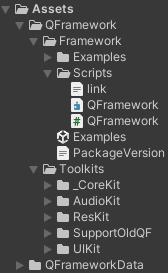

简述
QFramework是一个体量比较适中的框架，相比SKCell这种纯功能框架，QFramework
简易分析
可以先看一下QFramework在Unity的层级目录：

显然结构可以分为2部分：
- Framework，即
框架部分
仅1个脚本，共不到1000行代码，非常简短(因为说到底就是一些基础规范) - Toolkits，即
功能部分
本篇将会详细分析QFramework脚本中的内容
UML类图分析
这里尝试制作了UML类图来进行归纳总结：
框架
框架是极其重要的，有好的框架无论是对个人还是团队都能提升开发效率
框架对比
这里先按着QFramework的QFramework v1.0 使用指南进行对比：
不应用框架是这样的：
// Controller
public class CounterAppController : MonoBehaviour
{
// View
private Button mBtnAdd;
private Button mBtnSub;
private Text mCountText;
// Model
private int mCount = 0;
void Start()
{
// View 组件获取
mBtnAdd = transform.Find("BtnAdd").GetComponent<Button>();
mBtnSub = transform.Find("BtnSub").GetComponent<Button>();
mCountText = transform.Find("CountText").GetComponent<Text>();
// 监听输入
mBtnAdd.onClick.AddListener(() =>
{
// 交互逻辑
mCount++;
// 表现逻辑
UpdateView();
});
mBtnSub.onClick.AddListener(() =>
{
// 交互逻辑
mCount--;
// 表现逻辑
UpdateView();
});
UpdateView();
}
void UpdateView()
{
mCountText.text = mCount.ToString();
}
}
以上代码某种意义上"简单明了"，仅使用了一个脚本就完成了计数器所需要的所有内容
看似很好，但这意味着
- 目前是3个View，1个Model，那么假如有很多呢？不仅需要声明，还需要初始化与绑定，代码量巨大，一个脚本支撑不了那么多内容
- 目前Model具有初始值0，那么假如需要扩展(读取写入功能)，不满足需要改造，非常容易出错
UpdateView()需要手动调用
QFramework框架定义了以下内容：
- Architecture，类似于PureMVC的Facade，用于注册各类内容
- Model，即M
- Controller，即C
- View本质上附属于Controller，通过
UpdateView()绑定即可
- View本质上附属于Controller，通过
- Command，用于解决Controller过于臃肿的问题(分担职责，内容被拆到Command里了)
- Event，事件用于自动绑定(MVVM)
- BindableProperty，可取代事件
- Utility，定义功能用于便捷执行
- System，用于集中某一种特定功能(从Command中剥离出来)
- Query，专用于查询
应用框架是这样的：
首先需要一个Architecture入口，即CounterApp:
public class CounterApp : Architecture<CounterApp>
{
protected override void Init()
{
// 注册 System
this.RegisterSystem<IAchievementSystem>(new AchievementSystem());
// 注册 Model
this.RegisterModel<ICounterAppModel>(new CounterAppModel());
// 注册存储工具的对象
this.RegisterUtility<IStorage>(new Storage());
}
// 特性：Command拦截(捕获执行操作并进行额外操作)
protected override void ExecuteCommand(ICommand command)
{
Debug.Log("Before " + command.GetType().Name + "Execute");
base.ExecuteCommand(command);
Debug.Log("After " + command.GetType().Name + "Execute");
}
protected override TResult ExecuteCommand<TResult>(ICommand<TResult> command)
{
Debug.Log("Before " + command.GetType().Name + "Execute");
var result = base.ExecuteCommand(command);
Debug.Log("After " + command.GetType().Name + "Execute");
return result;
}
}
可以看到对于该例，注册了3个内容：System/Model/Utility
Model是核心，即CounterAppModel：
public class CounterAppModel : AbstractModel
{
private int mCount;
public int Count
{
get => mCount;
set
{
if (mCount != value)
{
mCount = value;
this.SendEvent<CountChangeEvent>(value);
}
}
}
protected override void OnInit()
{
var storage = this.GetUtility<Storage>();
Count = storage.LoadInt(nameof(Count));
this.RegisterEvent<CountChangeEvent>(e =>
{
this.GetUtility<Storage>().SaveInt(nameof(Count), Count);
});
}
}
可以看到使用了Event进行注册，同时我们还需在Command中SendEvent()，从而
但其实有一种更加智能的数据类BindableProperty
public interface ICounterAppModel : IModel
{
BindableProperty<int> Count { get; }
}
public class CounterAppModel : AbstractModel, ICounterAppModel
{
public BindableProperty<int> Count { get; } = new BindableProperty<int>();
protected override void OnInit()
{
var storage = this.GetUtility<IStorage>();
// 设置初始值（不触发事件）
Count.SetValueWithoutEvent(storage.LoadInt(nameof(Count)));
// 当数据变更时 存储数据
Count.Register(newCount =>
{
storage.SaveInt(nameof(Count),newCount);
});
}
}
上述保存存储功能由该Utility提供，即Storage：
public interface IStorage : IUtility
{
void SaveInt(string key, int value);
int LoadInt(string key, int defaultValue = 0);
}
public class Storage : IStorage
{
public void SaveInt(string key, int value)
{
PlayerPrefs.SetInt(key,value);
}
public int LoadInt(string key, int defaultValue = 0)
{
return PlayerPrefs.GetInt(key, defaultValue);
}
}
Controller为另一个核心，这里的是CounterAppController：
public class CounterAppController : MonoBehaviour, IController
{
private Button mBtnAdd;
private Button mBtnSub;
private Text mCountText;
private ICounterAppModel mModel;
void Start()
{
mModel = this.GetModel<ICounterAppModel>();
mBtnAdd = transform.Find("BtnAdd").GetComponent<Button>();
mBtnSub = transform.Find("BtnSub").GetComponent<Button>();
mCountText = transform.Find("CountText").GetComponent<Text>();
mBtnAdd.onClick.AddListener(() =>
{
this.SendCommand<IncreaseCountCommand>();
});
mBtnSub.onClick.AddListener(() =>
{
this.SendCommand(new DecreaseCountCommand());
});
mModel.Count.RegisterWithInitValue(newCount =>
{
UpdateView();
}).UnRegisterWhenGameObjectDestroyed(gameObject);
}
void UpdateView()
{
mCountText.text = mModel.Count.ToString();
}
public IArchitecture GetArchitecture()
{
return CounterApp.Interface;
}
private void OnDestroy()
{
mModel = null;
}
}
这里做了2件事：
- 按钮绑定Command(使用
SendCommand()发送相应命令) - 数据Model绑定视图变化(一旦数据更改视图自动随之更改)
Command是很简单的，就是动作的具体实现：
public class IncreaseCountCommand : AbstractCommand
{
protected override void OnExecute()
{
var model = this.GetModel<ICounterAppModel>();
model.Count.Value++;
}
}
public class DecreaseCountCommand : AbstractCommand
{
protected override void OnExecute()
{
this.GetModel<ICounterAppModel>().Count.Value--; // -+
}
}
注册中还有一个System，即AchievementSystem：
public interface IAchievementSystem : ISystem {}
public class AchievementSystem : AbstractSystem ,IAchievementSystem
{
protected override void OnInit()
{
this.GetModel<ICounterAppModel>() // -+
.Count
.Register(newCount =>
{
if (newCount == 10)
{
Debug.Log("触发 点击达人 成就");
}
else if (newCount == 20)
{
Debug.Log("触发 点击专家 成就");
}
else if (newCount == -10)
{
Debug.Log("触发 点击菜鸟 成就");
}
});
}
}
这就是这套框架实现的所有，这里简单地分析一下操作流程：
- 点击+号，由于按钮已绑定onClick事件，触发IncreaseCountCommand
- 执行
model.Count.Value++，首先Count的值会+1- 由于Count注册storage事件，会将新值通过PlayerPrefs保存下来
- 由于Count注册成就System，会触发新值为10的成就消息
- 由于Count注册视图更新事件，会将界面的相应视图刷新
- 由于CounterApp中的拦截操作，在执行Command的前后会输出debug信息
框架分析
虽然QFramework教程中讲解了框架的演变，但是本质上代码没有发生改变，这里先自行分析一下
接口(规则)
随意查看QFramework中的一个架构组件，比如说IController：public interface IController : IBelongToArchitecture, ICanSendCommand, ICanGetSystem, ICanGetModel, ICanRegisterEvent, ICanSendQuery, ICanGetUtility
QFramework中充斥着大量接口，
就比如说
随意查看某一具体接口：public interface ICanSendCommand : IBelongToArchitecture {}
可以发现：
具体在后续使用到继续分析
Architecture
在QFramework中，
简单来说：GetModel())并自动初始化了注册的组件
public interface IArchitecture
{
// 一系列操作接口
}
public abstract class Architecture<T> : IArchitecture where T : Architecture<T>, new()
{
private bool mInited = false;
public static Action<T> OnRegisterPatch = architecture => { };
protected static T mArchitecture;
public static IArchitecture Interface
{
get
{
if (mArchitecture == null) InitArchitecture();
return mArchitecture;
}
}
public static void InitArchitecture()
{
if (mArchitecture == null)
{
mArchitecture = new T();
mArchitecture.Init();
OnRegisterPatch?.Invoke(mArchitecture);
foreach (var model in mArchitecture.mContainer.GetInstancesByType<IModel>().Where(m => !m.Initialized))
{
model.Init();
model.Initialized = true;
}
foreach (var system in mArchitecture.mContainer.GetInstancesByType<ISystem>()
.Where(m => !m.Initialized))
{
system.Init();
system.Initialized = true;
}
mArchitecture.mInited = true;
}
}
// 一系列操作接口实现
}
这里可以注意到一种很不错的设计：Architecture<T>的声明本身是一种单例写法，结合静态Interface，可以做到创建多个单例实现，但无论我使用哪种，当前有且仅有一个单例A/B两种Architecture，如果我调用A.Interface，那么初始化的就是A版本(当然既然初始化了A那么B就用不到了)，反之
IOCContainer
在Architecture使用到了一个概念
IOC其实我们会很熟悉，
有了IOC，我们能将强耦合剥离出来，通过注册到IOCContainer，从IOCContainer中取出，从而
IOCContainer的本身非常简单，内部存储了一个字典：private Dictionary<Type, object> mInstances = new Dictionary<Type, object>();
由此可见：
这种解释可能不是特别清楚，可以结合以下两者理解：
// <IOCContainer>的注册方法
public void Register<T>(T instance)
{
var key = typeof(T);
if (mInstances.ContainsKey(key))
{
mInstances[key] = instance;
}
else
{
mInstances.Add(key, instance);
}
}
// <Architecture>提供的Model注册方法
public void RegisterModel<TModel>(TModel model) where TModel : IModel
{
model.SetArchitecture(this);
mContainer.Register<TModel>(model); // 把TModel类型的model存入IOCContainer中
// 也就是说：我们尝试获取TModel，实际就会获取到相应model实例，使用时不需要考虑更多
if (mInited)
{
model.Init();
model.Initialized = true;
}
}
IOCContainer的用法也很简单，只要像上述RegisterModel()中一样注册过，后续通过Get<T>()即可从容器中将相应实例取出
我们同时也知道了一件关键的事：
显然这
- Microsoft.Extensions.DependencyInjection(C#)
- Zenject(Unity)
Controller与Model
通过前面的例子分析，我们也能很清楚地了解到：
QFramework其实和PureMVC是类似的：
PureMVC本质上是一个MVC：
- 使用门面模式Facade进行管理这是框架上的优化
- MVC内部演变为Proxy/Mediator/Command，这同样是优化
- 等等
所以对于QFramework来说，首先需要考虑的还是MVC，但是有所不同：
这其实是一件有利有弊的事情：
Controller可以非常容易地访问View，也就是说初始化/按钮绑定/更新视图都可以在一处完成，非常方便，同时无需通信减少开销 Controller的代码量会变大，容易搞不清楚 违反单一职责原则
所以说这其实是一种
回过头来，还是专注于QFramework的实现：
在QFramework中，
Controller
Controller并没有实现抽象类，仅有一个接口public interface IController : IBelongToArchitecture, ICanSendCommand, ICanGetSystem, ICanGetModel, ICanRegisterEvent, ICanSendQuery, ICanGetUtility {}
这也代表了一个Controller可以做的操作(如可以获取Model组件...)
Model
同样的，Model也具有接口public interface IModel : IBelongToArchitecture, ICanSetArchitecture, ICanGetUtility, ICanSendEvent, ICanInit {}
对于Model来说，更重要的是实现的抽象类
public abstract class AbstractModel : IModel
{
private IArchitecture mArchitecturel;
IArchitecture IBelongToArchitecture.GetArchitecture() => mArchitecturel;
void ICanSetArchitecture.SetArchitecture(IArchitecture architecture) => mArchitecturel = architecture;
public bool Initialized { get; set; }
void ICanInit.Init() => OnInit();
public void Deinit() => OnDeinit();
protected virtual void OnDeinit()
{
}
protected abstract void OnInit();
}
我们知道了几件事：
- 由于IModel实现了IBelongToArchitecture接口，所以可以获取IArchitecture
- 由于IModel实现了ICanInit接口，所以具有
Init()/Deinit()操作
这里值得注意的是：
- 这里使用了
显式接口实现 ，会强制接口访问 ：- 如果想
GetArchitecture()，必须转换为IBelongToArchitecture调用 - 如果想
SetArchitecture()，必须转换为ICanSetArchitecture调用 - 如果想
Init()，必须转换为ICanInit调用( Deinit()不用，因为不是显式接口)
- 如果想
本质上框架的目的是：
这里举一个
public static class CanGetModelExtension
{
public static T GetModel<T>(this ICanGetModel self) where T : class, IModel =>
self.GetArchitecture().GetModel<T>();
}
对于此例，在实际使用时，我们只会感觉到：因为实现了ICanGetModel接口，所以我能通过GetModel()获取相应Model
public void RegisterModel<TModel>(TModel model) where TModel : IModel
{
model.SetArchitecture(this); // 即一定执行了Set操作，从而对mArchitecturel赋值
mContainer.Register<TModel>(model);
if (mInited)
{
model.Init();
model.Initialized = true;
}
}
public TModel GetModel<TModel>() where TModel : class, IModel => mContainer.Get<TModel>();
可以看到：
- IBelongToArchitecture接口实现完毕后，初始化执行
SetArchitecture()，后续可自由调用GetArchitecture()获取 - 将model注册仅IOCContainer后，后续可通过
Get<T>()从容器中取出，执行其操作
model.Init()ICanInit.Init()，但是IModel是个接口，ICanInit是其子接口，是可以直接调用的
Event
Event分析
Event用到的地方很多，经过各种包装产生了很多类，需要详细分析一下
首先来看一下有哪些类：
- IEasyEvent
- EasyEvent
- EasyEvents
- TypeEventSystem
- IOnEvent
- OrEvent
简单来看一下IUnRegister Register(Action onEvent);
最基本的就是
Register()---注册RegisterWithACall()---调用后注册UnRegister()---反注册Trigger()---调用
代码同样非常简单，其实就是一个
public class EasyEvent : IEasyEvent
{
private Action mOnEvent = () => { };
public IUnRegister Register(Action onEvent)
{
mOnEvent += onEvent;
return new CustomUnRegister(() => { UnRegister(onEvent); });
}
public IUnRegister RegisterWithACall(Action onEvent)
{
onEvent.Invoke();
return Register(onEvent);
}
public void UnRegister(Action onEvent) => mOnEvent -= onEvent;
public void Trigger() => mOnEvent?.Invoke();
}
令我们不太理解的可能是其中的IUnRegister接口以及CustomUnRegister类
之所以需要IUnRegister的原因是很明确的：Register(()=>{...})使用Lambda进行注册，我们会发现想要UnRegister()的时候由于得不到注册时的Action而无法反注册，此时提供的IUnRegister就非常有用了
IUnRegister/CustomUnRegister具体代码如下：
public interface IUnRegister
{
void UnRegister();
}
// 一种存储有Action的IUnRegister
public struct CustomUnRegister : IUnRegister
{
private Action mOnUnRegister { get; set; }
public CustomUnRegister(Action onUnRegister) => mOnUnRegister = onUnRegister;
public void UnRegister()
{
mOnUnRegister.Invoke();
mOnUnRegister = null; // 反注册完后就置空(可GC)
}
}
既然提到了反注册，那么可以再来看一组便捷类，具体调用如下：
mModel.Count.RegisterWithInitValue(newCount =>
{
UpdateView();
}).UnRegisterWhenGameObjectDestroyed(gameObject);
可以看到通过UnRegisterWhenGameObjectDestroyed()实现了
这牵扯到以下类：
- 三种反注册功能
UnRegisterOnDestroyTriggerUnRegisterOnDisableTriggerUnRegisterCurrentSceneUnloadedTrigger
- IUnRegister扩展
UnRegisterExtension
具体如下：
public abstract class UnRegisterTrigger : UnityEngine.MonoBehaviour
{
private readonly HashSet<IUnRegister> mUnRegisters = new HashSet<IUnRegister>();
public IUnRegister AddUnRegister(IUnRegister unRegister)
{
mUnRegisters.Add(unRegister);
return unRegister;
}
public void RemoveUnRegister(IUnRegister unRegister) => mUnRegisters.Remove(unRegister);
public void UnRegister()
{
foreach (var unRegister in mUnRegisters)
{
unRegister.UnRegister();
}
mUnRegisters.Clear();
}
}
public class UnRegisterOnDestroyTrigger : UnRegisterTrigger
{
private void OnDestroy()
{
UnRegister();
}
}
public class UnRegisterOnDisableTrigger : UnRegisterTrigger
{
private void OnDisable()
{
UnRegister();
}
}
public class UnRegisterCurrentSceneUnloadedTrigger : UnRegisterTrigger
{
private static UnRegisterCurrentSceneUnloadedTrigger mDefault;
public static UnRegisterCurrentSceneUnloadedTrigger Get
{
get
{
if (!mDefault)
{
mDefault = new GameObject("UnRegisterCurrentSceneUnloadedTrigger")
.AddComponent<UnRegisterCurrentSceneUnloadedTrigger>();
}
return mDefault;
}
}
private void Awake()
{
DontDestroyOnLoad(this);
hideFlags = HideFlags.HideInHierarchy;
SceneManager.sceneUnloaded += OnSceneUnloaded;
}
private void OnDestroy() => SceneManager.sceneUnloaded -= OnSceneUnloaded;
void OnSceneUnloaded(Scene scene) => UnRegister();
}
#endif
public static class UnRegisterExtension
{
#if UNITY_5_6_OR_NEWER
static T GetOrAddComponent<T>(GameObject gameObject) where T : Component
{
var trigger = gameObject.GetComponent<T>();
if (!trigger)
{
trigger = gameObject.AddComponent<T>();
}
return trigger;
}
public static IUnRegister UnRegisterWhenGameObjectDestroyed(this IUnRegister unRegister,
UnityEngine.GameObject gameObject) =>
GetOrAddComponent<UnRegisterOnDestroyTrigger>(gameObject)
.AddUnRegister(unRegister);
public static IUnRegister UnRegisterWhenGameObjectDestroyed<T>(this IUnRegister self, T component)
where T : UnityEngine.Component =>
self.UnRegisterWhenGameObjectDestroyed(component.gameObject);
public static IUnRegister UnRegisterWhenDisabled<T>(this IUnRegister self, T component)
where T : UnityEngine.Component =>
self.UnRegisterWhenDisabled(component.gameObject);
public static IUnRegister UnRegisterWhenDisabled(this IUnRegister unRegister,
UnityEngine.GameObject gameObject) =>
GetOrAddComponent<UnRegisterOnDisableTrigger>(gameObject)
.AddUnRegister(unRegister);
public static IUnRegister UnRegisterWhenCurrentSceneUnloaded(this IUnRegister self) =>
UnRegisterCurrentSceneUnloadedTrigger.Get.AddUnRegister(self);
#endif
代码其实是比较清晰易懂的：OnDestroy()/OnDisable()/场景卸载时自动反注册的功能，
核心是由一个组件记录下反注册内容，在Unity生命周期中自动调用
需要注意的是：
结合EasyEvent来看，会发现无非就是
EasyEvent提供了3种泛型方法：EasyEvent<T>/EasyEvent<T,K>/EasyEvent<T,K,S>
区别其实就是Action传入参数数量而已
但是要注意：IEasyEvent.Register()
这是因为这是
public class EasyEvent<T> : IEasyEvent
{
public IUnRegister Register(Action<T> onEvent)
{
mOnEvent += onEvent;
return new CustomUnRegister(() => { UnRegister(onEvent); });
}
// 如果没有传入T，那么调用的就是该形式了
IUnRegister IEasyEvent.Register(Action onEvent)
{
return Register(Action);
void Action(T _) => onEvent();
}
}
内部实现就是
public class EasyEvents
{
// 单例，唯一入口
private static readonly EasyEvents mGlobalEvents = new EasyEvents();
public static T Get<T>() where T : IEasyEvent => mGlobalEvents.GetEvent<T>();
public static void Register<T>() where T : IEasyEvent, new() => mGlobalEvents.AddEvent<T>();
private readonly Dictionary<Type, IEasyEvent> mTypeEvents = new Dictionary<Type, IEasyEvent>();
public void AddEvent<T>() where T : IEasyEvent, new() => mTypeEvents.Add(typeof(T), new T());
public T GetEvent<T>() where T : IEasyEvent
{
return mTypeEvents.TryGetValue(typeof(T), out var e) ? (T)e : default;
}
public T GetOrAddEvent<T>() where T : IEasyEvent, new()
{
var eType = typeof(T);
if (mTypeEvents.TryGetValue(eType, out var e))
{
return (T)e;
}
var t = new T();
mTypeEvents.Add(eType, t);
return t;
}
}
根据代码，我们会联想到：Dictionary<Type, IEasyEvent>这种形式正是IOCContainer
public void SendEvent<TEvent>() where TEvent : new() => mTypeEventSystem.Send<TEvent>();
public void SendEvent<TEvent>(TEvent e) => mTypeEventSystem.Send<TEvent>(e);
public IUnRegister RegisterEvent<TEvent>(Action<TEvent> onEvent) => mTypeEventSystem.Register<TEvent>(onEvent);
public void UnRegisterEvent<TEvent>(Action<TEvent> onEvent) => mTypeEventSystem.UnRegister<TEvent>(onEvent);
该类同样简单，为
public class TypeEventSystem
{
private readonly EasyEvents mEvents = new EasyEvents();
public static readonly TypeEventSystem Global = new TypeEventSystem();
public void Send<T>() where T : new() => mEvents.GetEvent<EasyEvent<T>>()?.Trigger(new T());
public void Send<T>(T e) => mEvents.GetEvent<EasyEvent<T>>()?.Trigger(e);
public IUnRegister Register<T>(Action<T> onEvent) => mEvents.GetOrAddEvent<EasyEvent<T>>().Register(onEvent);
public void UnRegister<T>(Action<T> onEvent)
{
var e = mEvents.GetEvent<EasyEvent<T>>();
e?.UnRegister(onEvent);
}
}
可以看到，其中有一个Global，这就是用于
public interface IOnEvent<T>
{
void OnEvent(T e);
}
public static class OnGlobalEventExtension
{
public static IUnRegister RegisterEvent<T>(this IOnEvent<T> self) where T : struct =>
TypeEventSystem.Global.Register<T>(self.OnEvent);
public static void UnRegisterEvent<T>(this IOnEvent<T> self) where T : struct =>
TypeEventSystem.Global.UnRegister<T>(self.OnEvent);
}
内容不多，仅提供了一个接口以及对应的注册方法，可以看出其实就是一种
大致用法就是：类上加接口，在该类中实现OnEvent()并RegisterEvent()，在任意处需要调用时通过TypeEventSystem.Global.Send<XXX>()即可
用法如下：
private BindableProperty<int> mPropertyA = new BindableProperty<int>(10);
private BindableProperty<int> mPropertyB = new BindableProperty<int>(5);
private EasyEvent EventA = new EasyEvent();
void Start()
{
// 为mPropertyA/mPropertyB/EventA都注册事件
mPropertyA
.Or(EventA)
.Or(mPropertyB)
.Register(() =>
{
Debug.Log("Event Received");
}).UnRegisterWhenGameObjectDestroyed(gameObject);
}
可以看到这是一个非常便捷的语法，可以同时为多个需要Register的对象进行注册操作，而无需写多次
代码其实并不复杂：
public interface IUnRegisterList
{
List<IUnRegister> UnregisterList { get; }
}
public class OrEvent : IUnRegisterList
{
public OrEvent Or(IEasyEvent easyEvent)
{
// 将新的easyEvent注册进mOnEvent并将存入IUnRegister存入UnregisterList
easyEvent.Register(Trigger).AddToUnregisterList(this);
return this;
}
private Action mOnEvent = () => { };
public IUnRegister Register(Action onEvent)
{
mOnEvent += onEvent;
return new CustomUnRegister(() => { UnRegister(onEvent); });
}
public IUnRegister RegisterWithACall(Action onEvent)
{
onEvent.Invoke();
return Register(onEvent);
}
public void UnRegister(Action onEvent)
{
mOnEvent -= onEvent;
this.UnRegisterAll();
}
private void Trigger() => mOnEvent?.Invoke();
public List<IUnRegister> UnregisterList { get; } = new List<IUnRegister>();
}
public static class OrEventExtensions
{
public static OrEvent Or(this IEasyEvent self, IEasyEvent e) => new OrEvent().Or(self).Or(e);
}
看起来可能一时不太懂，但是只要知道了这一点就非常好理解了：
核心函数为Or()，有2种：
IEasyEvent.Or()(OrEventExtensions中)OrEvent.Or()(OrEvent中)
显然，.Or()必然是对IEasyEvent使用的，两者合并会变为OrEvent，之后调用OrEvent.Or()不断扩容
观察IEasyEvent.Or()，本质上这还是在调用OrEvent.Or()public static OrEvent Or(this IEasyEvent self, IEasyEvent e) => new OrEvent().Or(self).Or(e);
简单理解：
结合两个Or()，说明每一个IEsayEvent都会调用一次OrEvent.Or()，
执行Or()则会为当前IEasyEvent添加mOnEvent?.Invoke()操作
同时将IUnRegister收集到List供一并反注册
既然是为IEasyEvent注册的，那么
private void Update()
{
if (Input.GetMouseButtonDown(0))
{
mPropertyA.Value++;
}
if (Input.GetMouseButtonDown(1))
{
mPropertyB.Value++;
}
if (Input.GetKeyDown(KeyCode.Space))
{
EventA.Trigger();
}
}
Event总结
可以看到QFramework提供了很多种Event的形式，但是本质上其实就一种：EasyEvent，其余的都是在此基础上做扩展罢了
具体如下：
- EasyEvent：
事件的基础，是Action的一层封装，提供了注册Register/反注册UnRegister/触发Trigger三种操作，同时注册后提供一种反注册手段CustomUnRegister - EasyEvents：
EasyEvent组，使用IOCContainer(<Type,IEasyEvent>)的形式进行事件的存储，无调用封装，仅提供添加AddEvent与获取GetEvent方法 - TypeEventSystem：
EasyEvents的封装，向外界提供注册Register/反注册UnRegister/发送(触发)Send三种操作 - OrEvent：
一种特殊的类型，用于实现链式调用，本质上是一个延迟调用器(为所有参加.Or()连点方法的IEasyEvent注册Trigger事件，具体内容为连点后的Register()内容)
所以说：
Model中的Event
对于Model来说，最核心的就是其数据，使用Event可以解决这个问题
考虑一下一般情况，假设有一个数据count，大致是这样的：
public class CounterAppModel : AbstractModel
{
private int mCount;
public int Count
{
get => mCount;
set
{
if (mCount != value)
{
mCount = value;
PlayerPrefs.SetInt(nameof(Count), mCount);
}
}
}
protected override void OnInit()
{
var storage = this.GetUtility<Storage>();
Count = storage.LoadInt(nameof(Count));
CounterApp.Interface.RegisterEvent<CountChangeEvent>(e =>
{
this.GetUtility<Storage>().SaveInt(nameof(Count), Count);
});
}
}
public struct CountChangeEvent {}
public class CountChangeCommand : AbstractCommand
{
protected override void OnExecute()
{
this.GetModel<CounterAppModel>().Count++;
this.SendEvent<CountChangeEvent>();
}
}
可以看到：
- 这对应的就是
Architecture.RegisterEvent()/SendEvent()，最核心的底层当然是EasyEvent.Register()/Trigger() - 我们需要注册一个事件用于CountChange发生时，即每当
CounterAppModel.Count++时需要添加SendEvent()操作
可以想到一个致命缺点：
但是也可以想到一个优点：
BindableProperty
Event虽然可以解决，但是最好的方式是
这里看一下BindableProperty的实现：
public class CounterAppModel : AbstractModel,ICounterAppModel
{
public BindableProperty<int> Count { get; } = new BindableProperty<int>();
protected override void OnInit()
{
var storage = this.GetUtility<IStorage>();
// 设置初始值（不触发事件）
Count.SetValueWithoutEvent(storage.LoadInt(nameof(Count)));
// 当数据变更时 存储数据
Count.Register(newCount =>
{
storage.SaveInt(nameof(Count),newCount);
});
}
}
对比发现：BindableProperty对于数据
其实现还是比较复杂的：
先从接口查看：
public interface IBindableProperty<T> : IReadonlyBindableProperty<T>
{
new T Value { get; set; }
void SetValueWithoutEvent(T newValue);
}
public interface IReadonlyBindableProperty<T> : IEasyEvent
{
T Value { get; }
IUnRegister RegisterWithInitValue(Action<T> action);
void UnRegister(Action<T> onValueChanged);
IUnRegister Register(Action<T> onValueChanged);
}
public interface IEasyEvent
{
IUnRegister Register(Action onEvent);
}
这说明了：
- IReadonlyBindableProperty
- 作为一个"绑定属性"，属性
Value是必须的 - 同时，提供注册Register与反注册UnRegister操作
- 作为一个"绑定属性"，属性
- IBindableProperty
- IBindableProperty是IReadonlyBindableProperty派生，即"不只读可设置"
详细需要查看实现类BindableProperty：
public class BindableProperty<T> : IBindableProperty<T>
{
public BindableProperty(T defaultValue = default) => mValue = defaultValue;
protected T mValue;
// 比较函数，判断a和b是否相等
public static Func<T, T, bool> Comparer { get; set; } = (a, b) => a.Equals(b);
// 自定义Comparer逻辑
public BindableProperty<T> WithComparer(Func<T, T, bool> comparer)
{
Comparer = comparer;
return this;
}
public T Value
{
get => GetValue();
set
{
if (value == null && mValue == null) return;
if (value != null && Comparer(value, mValue)) return;
SetValue(value);
mOnValueChanged.Trigger(value);
}
}
// 内部设置方法(会触发mOnValueChanged)
protected virtual void SetValue(T newValue) => mValue = newValue;
protected virtual T GetValue() => mValue;
// 外部设置方法(不会触发mOnValueChanged)
public void SetValueWithoutEvent(T newValue) => mValue = newValue;
private EasyEvent<T> mOnValueChanged = new EasyEvent<T>();
// 注册
public IUnRegister Register(Action<T> onValueChanged)
{
return mOnValueChanged.Register(onValueChanged);
}
// 注册且初始调用一次
public IUnRegister RegisterWithInitValue(Action<T> onValueChanged)
{
onValueChanged(mValue);
return Register(onValueChanged);
}
// 反注册
public void UnRegister(Action<T> onValueChanged) => mOnValueChanged.UnRegister(onValueChanged);
// IEasyEvent的注册
// 这里是为了提供一种便捷调用形式使用户在没有感知的情况下正常使用：
// BindableProperty<>是泛型的，Register需要泛型，但是如果不需要，就会自动回退至该方法
IUnRegister IEasyEvent.Register(Action onEvent)
{
return Register(Action);
void Action(T _) => onEvent(); // 将Action<T>适配为Action
}
public override string ToString() => Value.ToString();
}
可以看到内容很简单：无非就是在调用EasyEvent<T>的操作(前面有讲解)
但是要注意有2种反注册方法：
- 通过
BindableProperty.UnRegister()直接反注册 - 通过
BindableProperty.Register()获取的IUnRegister调用UnRegister()进行反注册
根据观察，两种反注册方法各有优点：
- 直接反注册：
不能使用Lambda，需要通过函数进行反注册 - IUnRegister反注册：
需要保存IUnRegister，通过IUnRegister才能反注册
所以的话根据实际情况选择即可
Command
在UI框架中，用Command集合一组操作是非常常见的事，
System
接口ISystem：
public interface ICommand : IBelongToArchitecture, ICanSetArchitecture, ICanGetSystem, ICanGetModel, ICanGetUtility,
ICanSendEvent, ICanSendCommand, ICanSendQuery
{
void Execute();
}
Execute()
Command也实现了抽象类
public abstract class AbstractCommand : ICommand
{
private IArchitecture mArchitecture;
IArchitecture IBelongToArchitecture.GetArchitecture() => mArchitecture;
void ICanSetArchitecture.SetArchitecture(IArchitecture architecture) => mArchitecture = architecture;
void ICommand.Execute() => OnExecute();
protected abstract void OnExecute();
}
除此以外，QFramework还提供了一组有返回值的Command：public abstract class AbstractCommand<TResult> : ICommand<TResult>
Utility与System
最核心的当然是Architecture，随后是Controller与Model，而
Utility
Utility，即功能，为了实现某些内容我们就需要相应的Utility
这有点类似与"纯功能框架"
在QFramework中，
public interface IUtility
{
}
// Architecture中
public void RegisterUtility<TUtility>(TUtility utility) where TUtility : IUtility =>
mContainer.Register<TUtility>(utility);
public TUtility GetUtility<TUtility>() where TUtility : class, IUtility => mContainer.Get<TUtility>();
可以看到，无非就是
System
System
接口ISystem：public interface ISystem : IBelongToArchitecture, ICanSetArchitecture, ICanGetModel, ICanGetUtility, ICanRegisterEvent, ICanSendEvent, ICanGetSystem, ICanInit {}
同样的，AbstractSystem与注册方法RegisterSystem()也是与Model类似的
Query
有时，我们可能想获取一些组件中的值用于某些计算得出一个数值，此时Query就提供了这种功能
接口如下：
public interface IQuery<TResult> : IBelongToArchitecture, ICanSetArchitecture, ICanGetModel, ICanGetSystem,
ICanSendQuery
{
TResult Do();
}
作为Query最重要的就是Do()，这类似于Command的Execute()，即计算
在Architecture中有相应的操作SendQuery()：
public TResult SendQuery<TResult>(IQuery<TResult> query) => DoQuery<TResult>(query);
protected virtual TResult DoQuery<TResult>(IQuery<TResult> query)
{
query.SetArchitecture(this);
return query.Do();
}
可以发现是和Command极其类似的，同样也具有AbstractQuery
Architecture详述
根据源代码，可以知道一切内容都会在Architecture中收束(集中)
从其IArchitecture接口就能知道：
public interface IArchitecture
{
void RegisterSystem<T>(T system) where T : ISystem;
void RegisterModel<T>(T model) where T : IModel;
void RegisterUtility<T>(T utility) where T : IUtility;
T GetSystem<T>() where T : class, ISystem;
T GetModel<T>() where T : class, IModel;
T GetUtility<T>() where T : class, IUtility;
void SendCommand<T>(T command) where T : ICommand;
TResult SendCommand<TResult>(ICommand<TResult> command);
TResult SendQuery<TResult>(IQuery<TResult> query);
void SendEvent<T>() where T : new();
void SendEvent<T>(T e);
IUnRegister RegisterEvent<T>(Action<T> onEvent);
void UnRegisterEvent<T>(Action<T> onEvent);
void Deinit();
}
从中我们也可以分析出一些规律：
- System/Model/Utility是作为一个"系统"存在的，可以注册(到IOCContainer)，也可以获取(从IOCContainer)
- Command/Query/Event是一种操作，需要发送(执行)
- Event本质上是Action，具有注册与反注册操作
再来简单看一下声明：public abstract class Architecture<T> : IArchitecture where T : Architecture<T>, new()
显然这是一种类似与单例的声明方法，用于把T传入内部
Architecture的初始化
Architecture提供了一种访问的方法Interface，第一次访问时则会初始化填充(单例)：
public static IArchitecture Interface
{
get
{
if (mArchitecture == null) InitArchitecture();
return mArchitecture;
}
}
public static void InitArchitecture()
{
if (mArchitecture == null)
{
// 先Init
mArchitecture = new T();
mArchitecture.Init();
// 再回调(传入Arch版Init)
OnRegisterPatch?.Invoke(mArchitecture);
// 初始化所有model(注册过的)
foreach (var model in mArchitecture.mContainer.GetInstancesByType<IModel>().Where(m => !m.Initialized))
{
model.Init();
model.Initialized = true;
}
// 初始化所有system(注册过的)
foreach (var system in mArchitecture.mContainer.GetInstancesByType<ISystem>()
.Where(m => !m.Initialized))
{
system.Init();
system.Initialized = true;
}
mArchitecture.mInited = true;
}
}
可以看到Model/System需要初始化，而Utility是没有在初始化中的，也就是说：
事实也确实如此，Utility的接口IUtility仅是一个空接口
同时，我们需要注意：
系统组件
对于Model/System/Utility，我们会认为是一种"系统":
- Model中存储着数据，需要将数据绑定至视图，并提供访问Model的方式
- System中执行着某种功能
- Utility是某种功能，可供其它部分获取并调用
显然，它们都有一个共同点：
所以它们都提供了Register与Get方法
public void RegisterModel<TModel>(TModel model) where TModel : IModel
{
model.SetArchitecture(this); // 填充归属
mContainer.Register<TModel>(model); // 放入IOCContainer
// 初始化
if (mInited)
{
model.Init();
model.Initialized = true;
}
}
public TModel GetModel<TModel>() where TModel : class, IModel => mContainer.Get<TModel>(); // 从IOCContainer中取出
var model = this.GetModel<ICounterAppModel>(); // Command中
对于该例，最终会找到T GetModel<T>(this ICanGetModel self)进行调用
执行组件
除了以上三者，剩余的是Command/Query/Event，它们的共同点即为
// Command
public class IncreaseCountCommand : AbstractCommand
{
protected override void OnExecute()
{
var model = this.GetModel<ICounterAppModel>();
model.Count.Value++;
}
}
// Query
public class SchoolAllPersonCountQuery : AbstractQuery<int>
{
protected override int OnDo()
{
return this.GetModel<StudentModel>().StudentNames.Count +
this.GetModel<TeacherModel>().TeacherNames.Count;
}
}
// Event
CounterApp.Interface.RegisterEvent<CountChangeEvent>(e =>
{
this.GetUtility<Storage>().SaveInt(nameof(Count), Count);
});
所以它们都提供了Send方法
与系统组件一致，最终是通过CanSendXXX接口进行调用
问题：为什么Command/Event具有
规则详述
在上述分析中，我们发现接口在QFramework中起到了非常重要的作用
在QFramework中，这些接口就是
观察后可以总结为以下几类：
- Architecture：
IBelongToArchitecture/ICanSetArchitecture - 系统组件：
Model/System/Utility的Get，同时提供ICanXXX的扩展方法 - 执行组件
Command/Query/Event的Send，同时提供ICanSendXXX的扩展方法 - 初始化与反初始化：
ICanInit
Architecture：
本质上IBelongToArchitecture其实可以称为ICanGetArchitecture
观察后我们可以得出2种用法：
接口具有GetArchitecture能力
如：IModel实现IBelongToArchitecture，在抽象类AbstractModel中具有显式接口实现：IArchitecture IBelongToArchitecture.GetArchitecture() => mArchitecturel;为接口添加扩展方法
如：GetModel()---一种基于ICanGetModel获取Model的方式public static T GetModel<T>(this ICanGetModel self) where T : class, IModel =>self.GetArchitecture().GetModel<T>();
- Model实现了接口的GetSetArchitecture/Init功能，这是接口需要的，而Controller仅有IBelongToArchitecture需要实现
- Model是需要注册进Architecture中的，Controller不需要
更重要的是：
public class CounterAppController : MonoBehaviour , IController
{
void Start()
{
mModel = this.GetModel<ICounterAppModel>();
// ...
}
public IArchitecture GetArchitecture()
{
return CounterApp.Interface;
}
}
// Architecture中
public void RegisterModel<TModel>(TModel model) where TModel : IModel
{
model.SetArchitecture(this); // 存入mArchitecturel
mContainer.Register<TModel>(model);
if (mInited)
{
model.Init();
model.Initialized = true;
}
}
public abstract class AbstractModel : IModel
{
private IArchitecture mArchitecturel;
// 对于Architecture中注册过的Model来说，调用时可直接获取
IArchitecture IBelongToArchitecture.GetArchitecture() => mArchitecturel;
void ICanSetArchitecture.SetArchitecture(IArchitecture architecture) => mArchitecturel = architecture;
// ...
}
扩展方法：
可以看到ICanXXX接口在QFramework中是极其重要的
以ICanGetModel为例：
public interface ICanGetModel : IBelongToArchitecture
{
}
public static class CanGetModelExtension
{
public static T GetModel<T>(this ICanGetModel self) where T : class, IModel =>
self.GetArchitecture().GetModel<T>();
}
首先，在前面也有所提及：
这里有一个重点：IBelongToArchitecture.GetArchitecture()，所以说如果AbstractModel的实现类重写了显式接口实现，即可更改GetArchitecture()则是无用的
组件规则
在前文中，组件接口并没有详细考虑
IController : IBelongToArchitecture, ICanSendCommand, ICanGetSystem, ICanGetModel, ICanRegisterEvent, ICanSendQuery, ICanGetUtilityIModel : IBelongToArchitecture, ICanSetArchitecture, ICanGetUtility, ICanSendEvent, ICanInitISystem : IBelongToArchitecture, ICanSetArchitecture, ICanGetModel, ICanGetUtility, ICanRegisterEvent, ICanSendEvent, ICanGetSystem, ICanInitICommand : IBelongToArchitecture, ICanSetArchitecture, ICanGetSystem, ICanGetModel, ICanGetUtility,ICanSendEvent, ICanSendCommand, ICanSendQueryIQuery<TResult> : IBelongToArchitecture, ICanSetArchitecture, ICanGetModel, ICanGetSystem, ICanSendQueryIUtility(空)- 无Event
以操作分组进行分析是比较合理的
首先是获取Get：
可获取的组件有：Model/System/Utility，也就是我们前面说的系统组件
Model：
需要的组件---Controller/System/Command/Query
Model可以说是最常用的了，无论什么操作都会用到数据，所以都需要获取- Model获取Model是一件非常
不建议 的操作，这是一种直接引用，会造成混乱(A要B/C，B要A/C，C要A/B，Model多的话会非常灾难)
- Model获取Model是一件非常
System：
需要的组件---Controller/System/Command/Query
System是和Model保持一致，但是原因不同：- System可以提供任何可能的功能，所以几乎所有的组件都可以获取
- Model不能获取是因为Model是数据，
System的操作是偏向业务的，职责不同
Utility：
需要的组件---Controller/Model/System/Command - Utility是比较好分析的，由于是一种功能，所以基本上肯定能用
- 没有实现ICanGetUtility的是Query，
Query是查询，当然不需要调用任何功能来完成 问题：为什么Model需要Utility
Model大部分情况是纯数据，但Model同样可以进行操作(有一个 OnInit()方法)，此时可能会用到Utility
然后是发送Send：
可发送的组件有：Command/Event/Query，也就是我们前面说的执行组件
Command：
需要的组件---Controller/Command
可以发送命令的组件不多，只有Controller与自己Command- Command可以发送Command，即可以嵌套，这是很好理解的
- Controller需要Command是因为
Command本质上其实就是为事件监听准备的
在UI框架中，用Command集合一组操作是非常常见的事，
代码被分离到Command脚本中减轻了原代码处的职责压力 Event：
需要的组件---Controller/Model/System/Command
可以发现Event要比Command泛用一些，除了Query都可以使用- 与Utility一致，Query不可以使用：
Query是查询，当然不需要触发任何事件
- 与Utility一致，Query不可以使用：
Query：
需要的组件---Controller/Command/Query
Query是一个用于查询结果并返回的组件，那么需要的组件一定是需要某项结果的，Model与System不行出于以下原因：- Model是数据，不能发送查询命令是再正常不过的了
- System大概是为了减少复杂度，想要操作那就自己运算，不要通过Query查询获取
再然后是注册Register：
需要通过接口来注册的只有Event
- Controller注册事件是显而易见的，因为视图更新回调需要在Controller中完成
- System则有可能会包装Model操作，需要封装成事件用于调用
除此以外还有3个接口：ICanInit/IBelongToArchitecture/ICanSetArchitecture
- ICanInit是非常简单的，
需要的组件---Model/System
这与Architecture中的RegisterModel()/RegisterSystem()对应 - IBelongToArchitecture/ICanSetArchitecture则与ICanXXX扩展方法有关：
如果需要来自Architecture的某方法的话就必须实现IBelongToArchitecture与ICanSetArchitecture两个接口
可以看到大部分组件都实现了两接口，需要的组件---System/Model/Command/Query 问题：为什么Controller仅实现了IBelongToArchitecture
GetArchitecture()，之后在调用相应功能时可直接获取
反过来说，其它组件需要ICanSetArchitecture接口是因为注册时的自动化Set需要，而Controller手动传入了，所以不需要